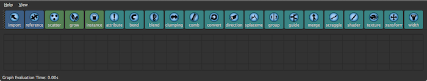
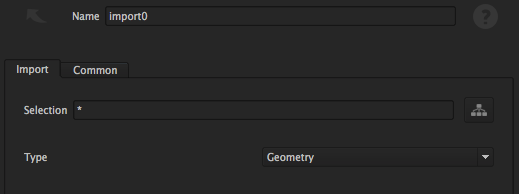
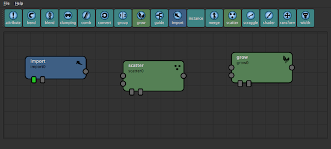
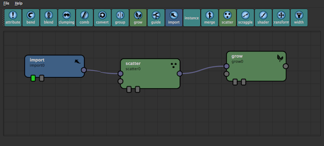
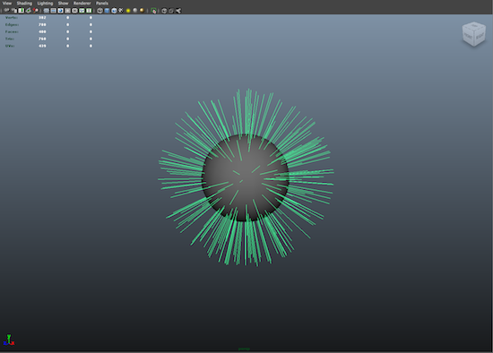

Once installed and you have the Yeti plugin loaded you’ll be ready to create your first graph.
A graph contains the flow of nodes that describe the process that the fur will undergo during the course of evaluation - these nodes can be re-organized, removed, and values changed to affect the final appearance of the fur.
Each instance of a Yeti node in Maya owns it’s own graph, so the first step in creating a graph is making sure a Yeti node has been created.
To create a Yeti node make sure a mesh is selected and use the CRM ( Create On Mesh ) button on the Yeti shelf, this will create a new Yeti node and add the selected geometry as an input. This new Yeti node is a container for an evaluated graph and also used as a way of referencing grooms and caches into the scene - it’s generally a good idea to rename this node to something useful so you can find it easily.
Note
Most of the time you will be creating Yeti graphs on input geometry that will be deforming - due to the way Yeti resolves the surfaces motion it’s required to have a Texture Reference object for each mesh that may be deforming. These can be created by selecting the Mesh and using the Create Texture Reference in Maya’s Texture menu. If not created you’ll likely end up with sliding/popping fur.
You may also create Yeti nodes with the CR ( Create Node ) button in the Yeti shelf, or with the pgYetiNewNode mel command though when created this way there will be no input objects assigned thus they will need to be added manually.
If at any point you want to add or remove input objects to the Yeti node open up the Graph/Input Objects palette in the Attribute Editor and Add Object(s) which will bring up a list of objects in the scene that can be added.
With this Yeti node selected use the GE ( Graph Editor ) button in the Yeti shelf, or Open Graph Editor in the Attribute Editor, to open up the editor for the current graph. As you have just created this node the graph area will be empty with the available nodes at the top of the window.
A node in a graph is used to apply a specific operation to the data flow and is allowed any number of inputs and at least one output. There are three categories of nodes:
| Node Type | Description |
|---|---|
| Input/Output | used for data IO for the graph - Import, for example, is used to import geometry, strand and guide data from the scene. |
| Creation | used to create new data in the graph - whether scattering point samples or growing the fur |
| Modify | used to actually modify the data flow - combing, guides, scraggle, etc. |
A nodes inputs and output are used to chain them together via arrows ( sometimes called noodles ) which defines how the data flows through the graph, it is useful to visualize the data as it moves from one node to another with each node applying it’s own operation to the data. Any output can be connected to multiple inputs, and inputs are limited to one connected output.
Every graph ( for fur ) will require an Import, Scatter and Grow node. Begin by creating an Import node, this should appear in the centre of the graph. You can select nodes, move them around and delete them.
The Import node is used to source data from the Maya scene so the graph knows what it’s to work with, this can either be the geometry from which the fur will grow, grooms or guide sets.
Note
Although you have access to the input geometry and grooms assigned in Maya the relationship to these in the graph is completely based on the nodes name. If the name of a node in Maya changes it will not automatically be reflected in the graph, thus you will have to manual update it.
You can double click any node to bring up the attribute inspector which is used to control the values of the node - for Input this includes the Import type describe above as well as a name used to identify one of multiple inputs. Yeti uses the name of the geometry to determine if it should imported, you can also use wildcards ( * ) to import multiple objects at the same time - by default Yeti assumes you want to import everything.
Now that you have geometry available in your graph you can begin to generate the fur which is a two step process. First a Scatter node will need to be created to scatter source points across the geometry and secondly you will need to create a Grow node which actually generates the fibers from those points.
The Scatter node has various attributes for controlling the density of system which ( as shown later ) can be controlled by grooms to limit it’s influence. When a Yeti graph is evaluated a global density multiplier is used to vary the density of the system between the viewport and rendering which directly affects the values in the Scatter node.
Note
In some instances you may have a scatter node ( source points for clumping ) that should stay consistent between varying densities, in this case you can use the Lock attribute in the inspector to lock the density to the specified values.
The Grow node is used to grow the fibers from the scattered points with control over length as well as segment length ( examples of controlling this with an input groom to follow ). Segment length is used to control how detailed the resulting fur geometry is and is directly related to the length of a fiber. The default is 0.25 ( based on Maya’s world space units ) which in most cases is a good default, if you’re working with smaller characters a smaller value may be more useful.
When more than one node has been created you will use the connections ( io’s ) on the nodes to create arrows between each node to control the flow of data.
In most cases each node will only have one output with the possibility of having multiple inputs with the top input being the first and the bottom being the last. For our simple graph this means that the output from the Import node should be connected to the first Input on the Scatter node with the output of the Scatter node then being connected to the first input on the Grow node.
If a node is currently selected each new node will automatically be connected to it’s output - this can be toggled off view the Auto Connect Nodes in the View menu.
Each node has two toggles along the bottom for controlling the node and/or graph behavior.
| Toggle | Description |
|---|---|
| Root | The first toggle signifies that the node is the Root of the graph and is the point that the graph will be evaluated up until. As you work with the graph you may want to visualize the result of each step individually which is possible by changing this root node. |
| Ignore | The second toggle is for ignoring the node which is useful if you’re experimenting with a graph and want to see how the result looks with or without a nodes influence. |
At this stage you should have a fairly evenly groomed furry sphere/cube/geometry of some sort in your Maya viewport and you may want to render.
In most circumstances the surface that Yeti is attached to will need to be animated in some way - as characters move and deform Yeti relies on a rest position to handle temporal and spatial changes to the input geometry.
This is done using Maya’s 3D Texture Reference objects in the Rendering context under the Texture main menu - this simple process is straight forward and the reference should be included in any rigs or other setups you may use, just select the mesh in question and select Texturing->Create Texture Reference Object.
If at any point the geometry topology changes just make sure to re-create this relationship.